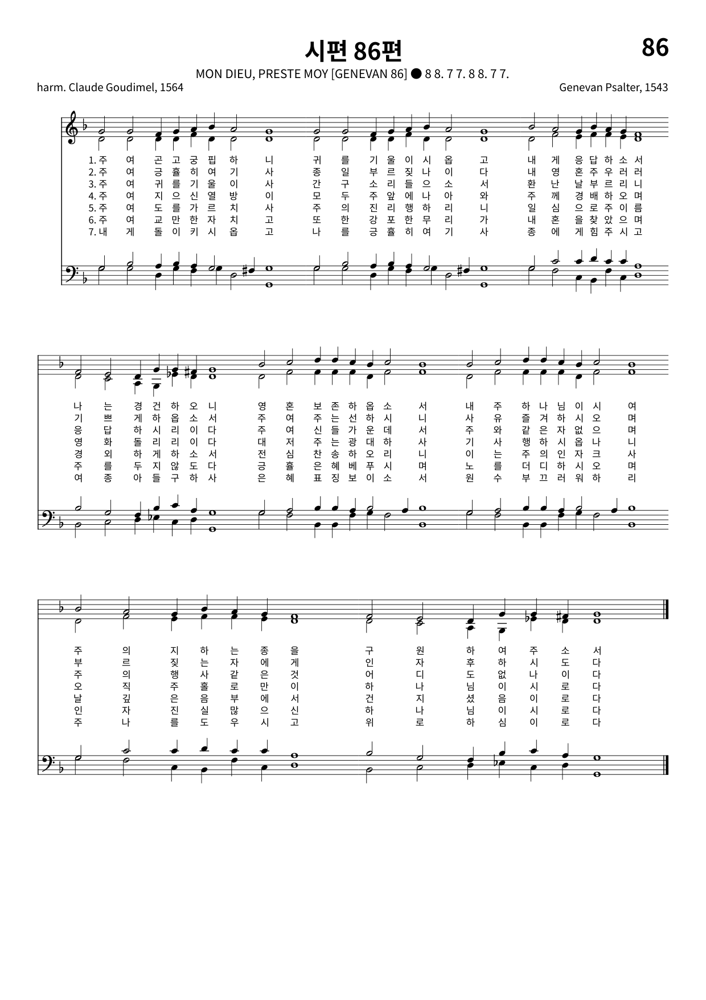

Psalm 86
MON DIEU, PRESTE MOY [GENEVAN 86] · 8 8. 7 7. 8 8. 7 7.
English title: Turn Thy Ear, O LORD, and Heed Me
Tune: Genevan Psalter, 1543 · Harmony: Claude Goudimel, 1564 · Lyrics: Korean adaptation of Psalm 86 from the Korean Revised Version (AI draft adaptation · not yet theologically reviewed) · 7 stanzas
Score PDF MusicXML (for printing) MusicXML (for accompaniment, with prelude and repeats) Read Psalm 86 (Korean Revised Version)
Score
← Psalm 85 ListAccompaniment (in preparation)Psalm 87 →
Lyrics (Korean)
Stanza 1 (Ps. 1-2)
주여 곤고 궁핍하니
귀를 기울이시옵고
내게 응답하소서
나는 경건하오니
영혼 보존하옵소서
내 주 하나님이시여
주 의지하는 종을
구원하여 주소서
주여 곤고 궁핍하니
귀를 기울이시옵고
내게 응답하소서
나는 경건하오니
영혼 보존하옵소서
내 주 하나님이시여
주 의지하는 종을
구원하여 주소서
Stanza 2 (Ps. 3-5)
주여 긍휼히 여기사
종일 부르짖나이다
내 영혼 주 우러러
기쁘게 하옵소서
주여 주는 선하시니
사유 즐겨 하시오며
부르짖는 자에게
인자 후하시도다
주여 긍휼히 여기사
종일 부르짖나이다
내 영혼 주 우러러
기쁘게 하옵소서
주여 주는 선하시니
사유 즐겨 하시오며
부르짖는 자에게
인자 후하시도다
Stanza 3 (Ps. 6-8)
주여 귀를 기울이사
간구 소리 들으소서
환난 날 부르리니
응답하시리이다
주여 신들 가운데서
주와 같은 자 없으며
주의 행사 같은 것
어디도 없나이다
주여 귀를 기울이사
간구 소리 들으소서
환난 날 부르리니
응답하시리이다
주여 신들 가운데서
주와 같은 자 없으며
주의 행사 같은 것
어디도 없나이다
Stanza 4 (Ps. 9-10)
주여 지으신 열방이
모두 주 앞에 나아와
주께 경배하오며
영화 돌리리이다
대저 주는 광대하사
기사 행하시옵나니
오직 주 홀로만이
하나님이시로다
주여 지으신 열방이
모두 주 앞에 나아와
주께 경배하오며
영화 돌리리이다
대저 주는 광대하사
기사 행하시옵나니
오직 주 홀로만이
하나님이시로다
Stanza 5 (Ps. 11-13)
주여 도를 가르치사
주의 진리 행하리니
일심으로 주 이름
경외하게 하소서
전심 찬송하오리니
이는 주의 인자 크사
날 깊은 음부에서
건지셨음이로다
주여 도를 가르치사
주의 진리 행하리니
일심으로 주 이름
경외하게 하소서
전심 찬송하오리니
이는 주의 인자 크사
날 깊은 음부에서
건지셨음이로다
Stanza 6 (Ps. 14-15)
주여 교만한 자 치고
또한 강포한 무리가
내 혼을 찾았으며
주를 두지 않도다
긍휼 은혜 베푸시며
노를 더디 하시오며
인자 진실 많으신
하나님이시로다
주여 교만한 자 치고
또한 강포한 무리가
내 혼을 찾았으며
주를 두지 않도다
긍휼 은혜 베푸시며
노를 더디 하시오며
인자 진실 많으신
하나님이시로다
Stanza 7 (Ps. 16-17)
내게 돌이키시옵고
나를 긍휼히 여기사
종에게 힘 주시고
여종 아들 구하사
은혜 표징 보이소서
원수 부끄러워하리
주 나를 도우시고
위로하심이로다
내게 돌이키시옵고
나를 긍휼히 여기사
종에게 힘 주시고
여종 아들 구하사
은혜 표징 보이소서
원수 부끄러워하리
주 나를 도우시고
위로하심이로다